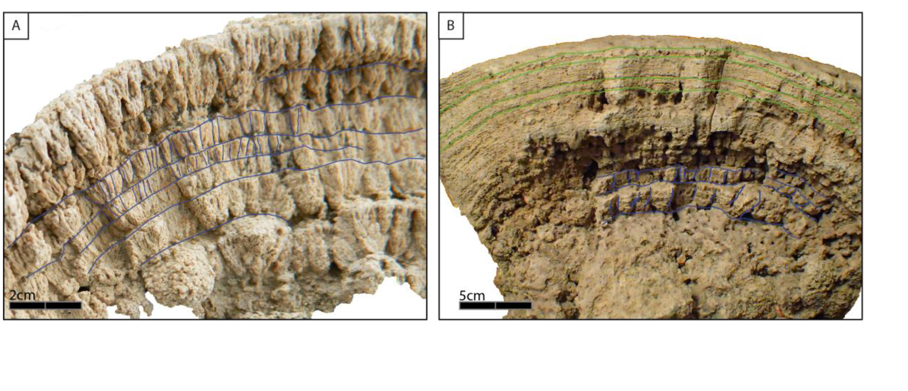

Growth morphologies and plausible stressor ruling the formation of the Late Pleistocene lacustrine buildups in the Mquinchao Basin (Argentina)

Resumo em Português
Em um artigo seminal sobre os mecanismos de formação de estromatólitos carbonáticos, Ginsburg (1991, Controversies in Modern Geology, pp. 25–36) enfatizou a necessidade de questionar o papel relativo dos microrganismos versus o ambiente em sua formação. A Bacia do Maquinchao é um sistema lacustre continental no sul da Argentina. Ela oferece um local ideal para o estudo de formações carbonáticas, o papel dos microrganismos e dos estressores ambientais em seu desenvolvimento e suas implicações em reconstruções paleoambientais. Atualmente, a bacia abrange dois lagos (Carri Laufquen Grande e Carri Laufquen Chica) unidos pelo rio Maquinchao, de caráter efêmero. Microbiolitos fósseis são encontrados ao sul e sudoeste do maior lago. Áreas preferenciais de desenvolvimento de microbiolitos fósseis foram mapeadas utilizando um Sistema de Posicionamento Global diferencial de alta resolução. Os afloramentos estão localizados entre 820 e 830 m de altitude, acima dos níveis atuais dos lagos e do rio Maquinchao, onde microbiolitos vivos foram observados. Dados de campo, juntamente com observações microscópicas e análises de difração de raios X, revelaram uma heterogeneidade tanto na distribuição quanto nos macromorfotipos, uma vez que as formações carbonáticas exibem diferentes morfologias, como crostas, colunas, estruturas abertas em forma de flor, arredondadas e elipsoides. Por outro lado, em meso e microescala, elas mostram morfologias mais homogêneas, incluindo laminações e arbustos. Essas formações microbianas estão associadas a substratos basálticos de tamanho variável, desde seixos até blocos. A homogeneidade nas meso e microestruturas sugere parâmetros intrínsecos estáveis (isto é, comunidades microbianas), enquanto os macromorfotipos variáveis indicam mudanças nas restrições extrínsecas, como declividade, energia e turbidez. A ocorrência de morfotipos distintos em formações separadas por afloramento e topografia sugere que os microbialitos de Maquinchao são indicativos de um antigo lago maior. Assim, as formações microbianas de Maquinchao são um valioso indicador da evolução do nível da água e, portanto, para reconstruções paleoambientais. Podem ainda ser utilizadas para interpretar a distribuição aparentemente aleatória dos tipos morfológicos e a extensão dos microbialitos no passado geológico.